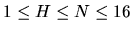

| The Hamming Distance Problem |
The Hamming distance between two strings of bits (binary integers) is the number of corresponding bit positions that differ. This can be found by using XOR on corresponding bits or equivalently, by adding corresponding bits (base 2) without a carry. For example, in the two bit strings that follow:
A 0 1 0 0 1 0 1 0 0 0
B 1 1 0 1 0 1 0 1 0 0
A XOR B = 1 0 0 1 1 1 1 1 0 0
The Hamming distance (H) between these 10-bit strings is 6, the number of 1's in the XOR string.
The number of such bit strings is equal to the combinatorial
symbol C(N,H). This is the number of possible combinations of N-H zeros
and H ones. It is equal to
This number can be very large. The program should work for .
Print a blank line between datasets.
1 4 2
0011 0101 0110 1001 1010 1100